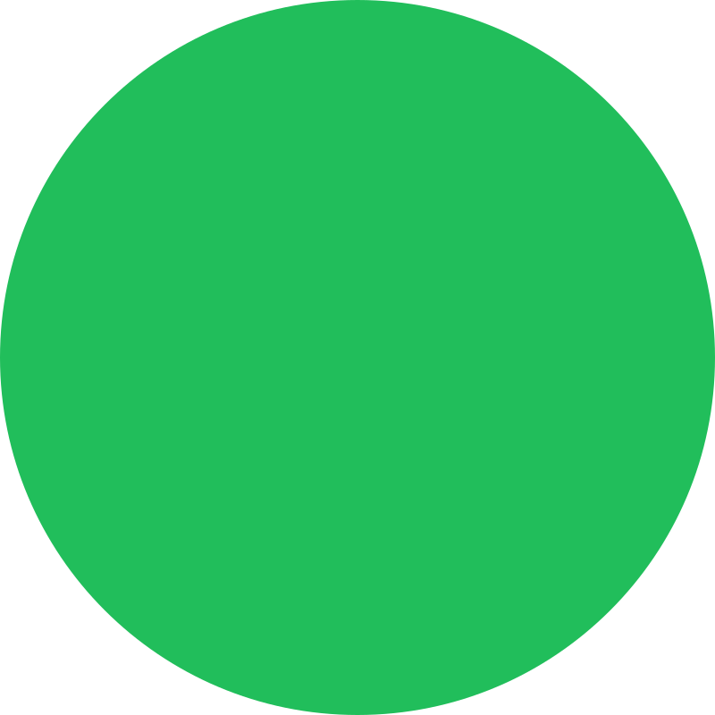
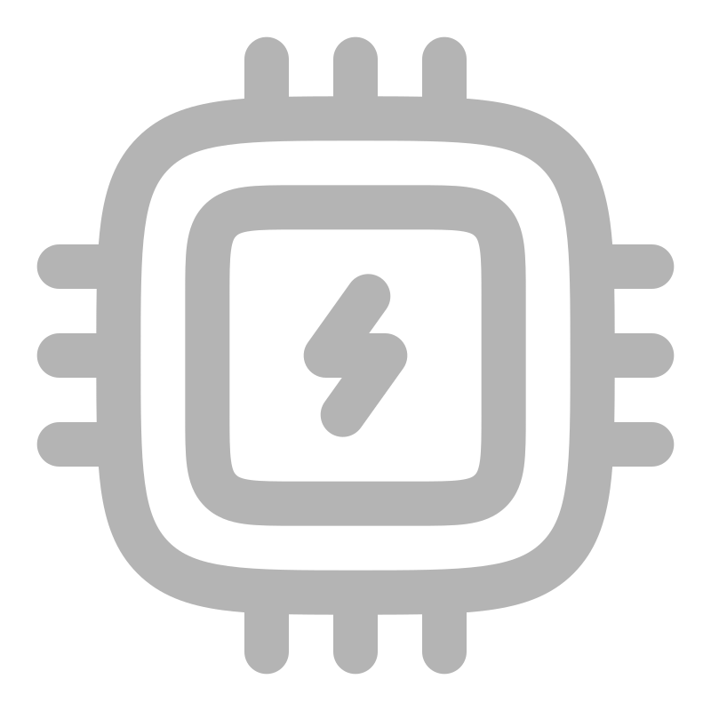
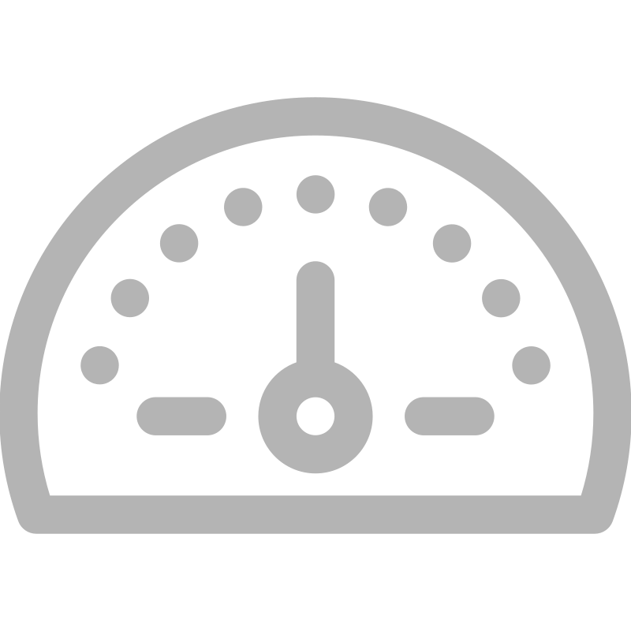
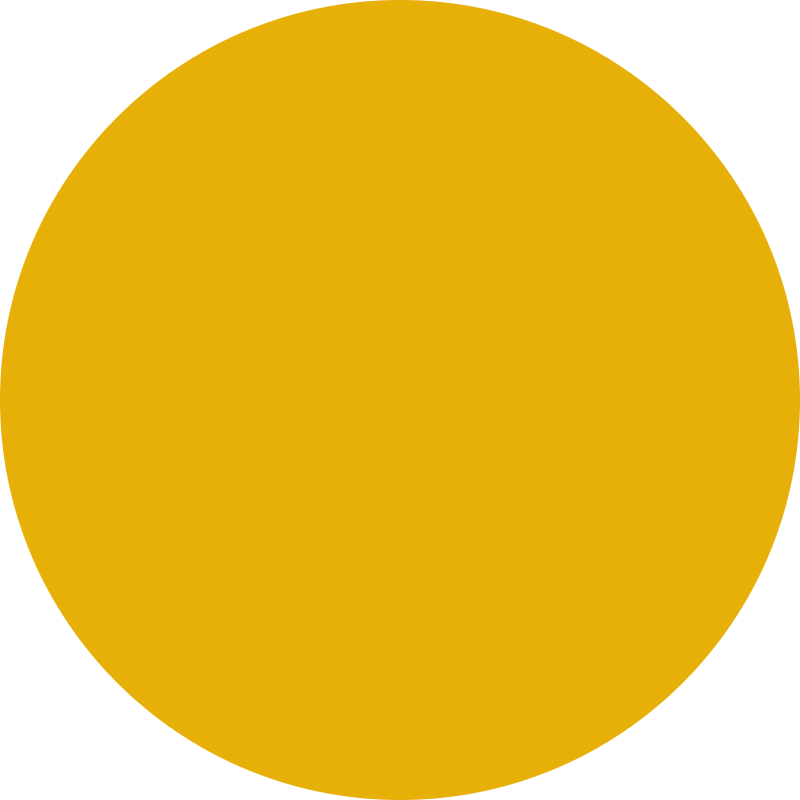
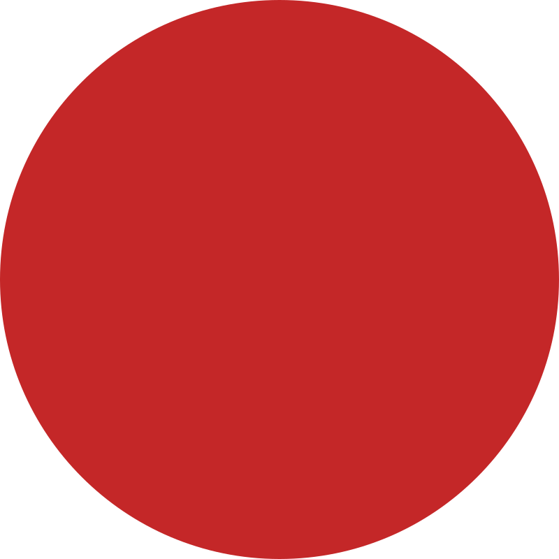
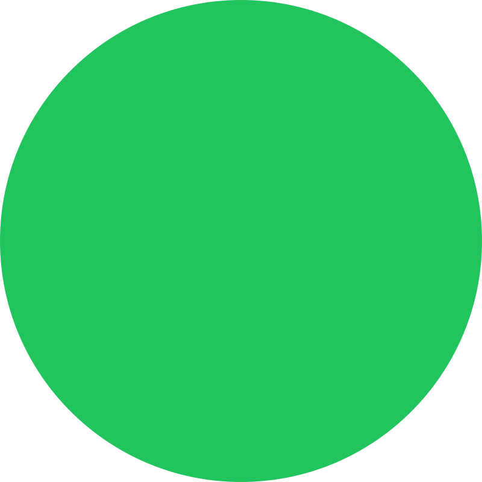

SRV-BROKER-PRD-01

OperacionalPRODUÇÃO
192.168.***.42
|
São Paulo - SP
|
6s atrás

8 Cores67%
CPU
12.3 / 16 GB
78%
Memória RAM
234 / 512 GB
52%
Disco

Média 5min12ms
Latência
Desde 02/01
45d 12h
Uptime
Últimos 15d
99.7%
Disponibilidade
CPU (24h)
Memória RAM (24h)
Latência (24h)
Componentes Monitorados

CPU
67%
0-65%

RAM
78%
0-70%

Disco
52%
0-80%
Latência
12ms
0-50ms
Heartbeat
Ativo
Contínuo
Disponib.
99.97%
≥99%
Alertas Recentes
4 Alertas
Memória RAM: Atenção
RAM - 13:45CPU: Acima do Limite
CPU - 14:00
Disco: Metade da Capacidade
Disco - 12:00Latência: Irá acima Padrão
Latência - 11:10